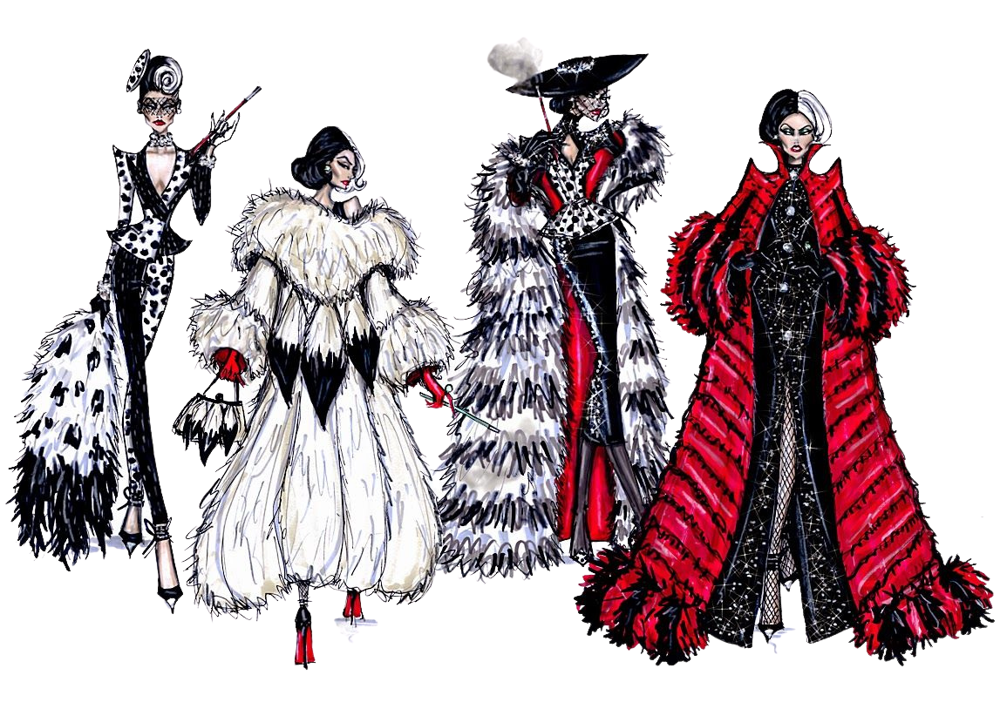

Desde antes da existência das civilizações modernas, a necessidade de se cobrir para combater
o frio se tornou um aspecto cultural que já determinava as diferenças entre ordens, que mais tarde se
transformariam em classes sociais.O homem pré-histórico usava as peles de animais e adornos também como forma de se exibir e mostrar seu poder
e status. Muitos anos se passaram, mas certas coisas nunca mudam! Exatamente por criar linguagens,
transformarcomportamentos e alterar a forma de expressão da humanidade, a moda ganhou espaço no meio acadêmico e passou a ser considerada uma ciência humana. Apesar de ser considerada
efêmera e fútil por uma parcela da sociedade moderna, a moda é parte constante da existência da humanidade e um
campo importanteda nossa cultura.Ela reflete gerações e épocas, estabelecendo vínculos com pensamentos, evoluções
tecnológicas, e com as características históricas de cada momento.
